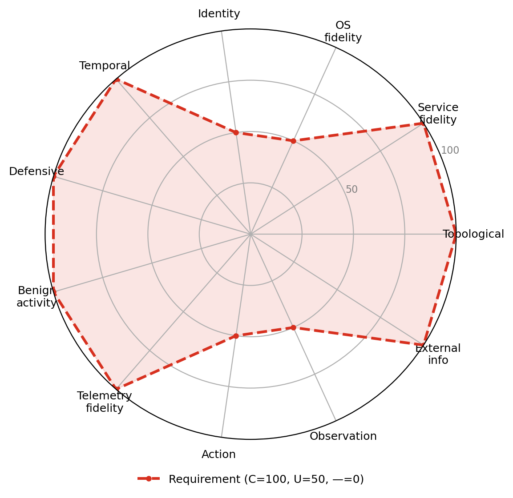
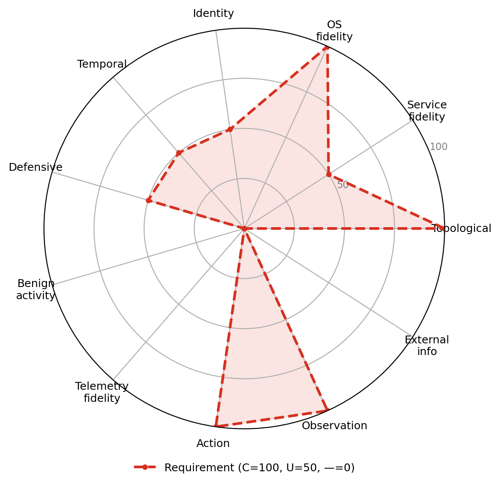
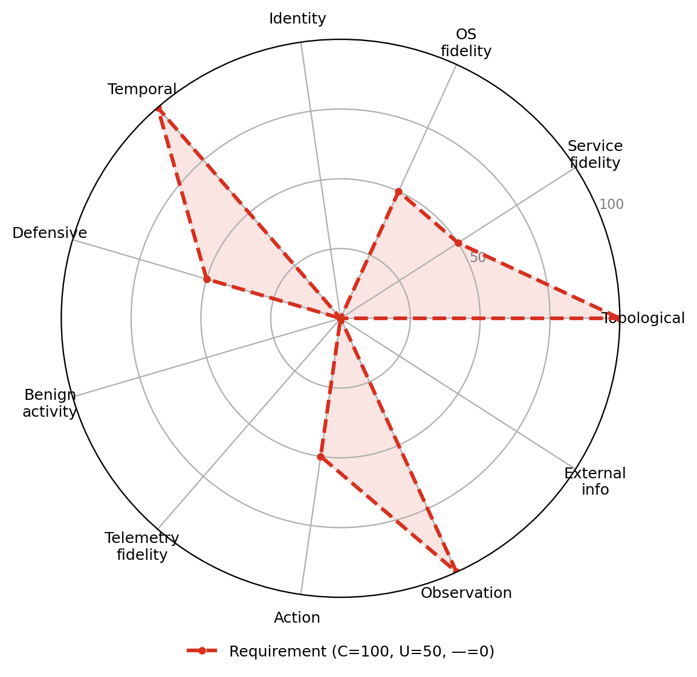
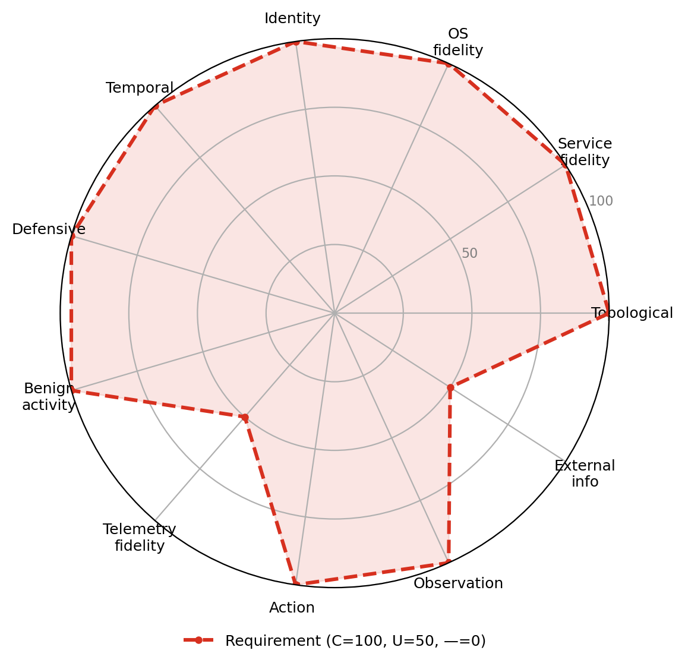
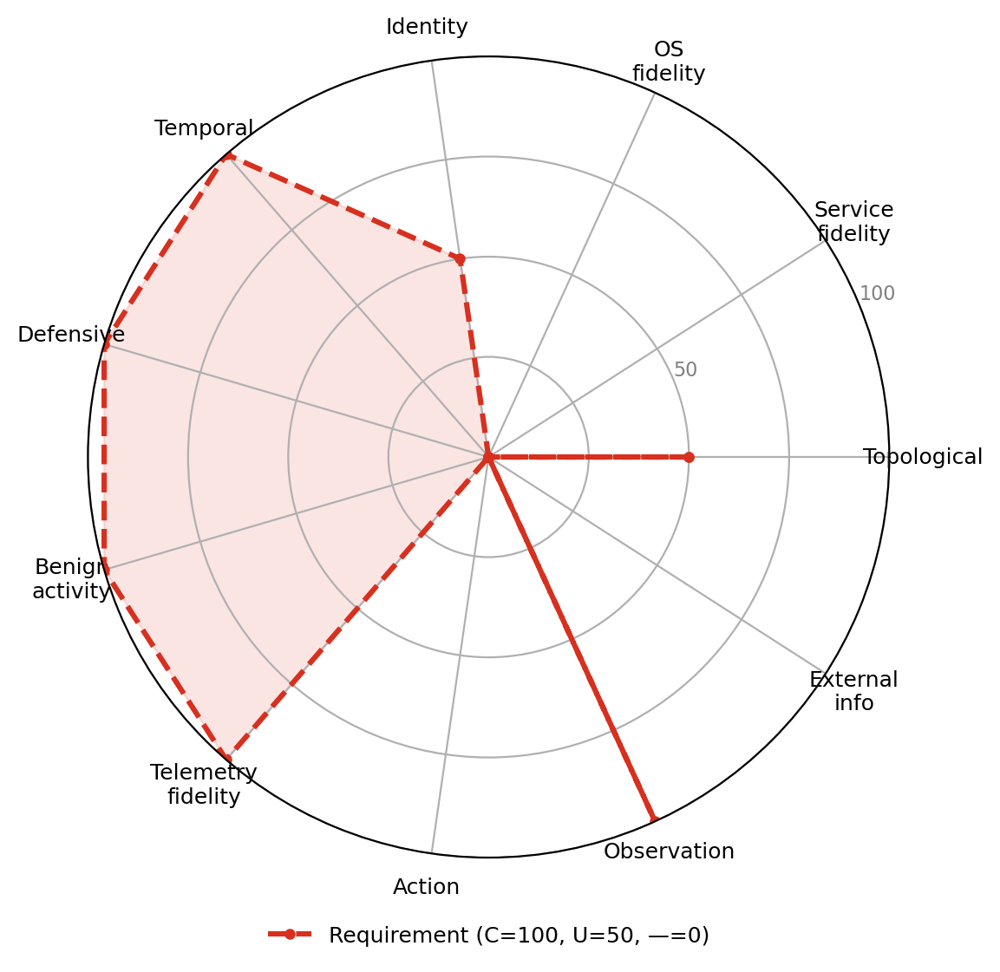
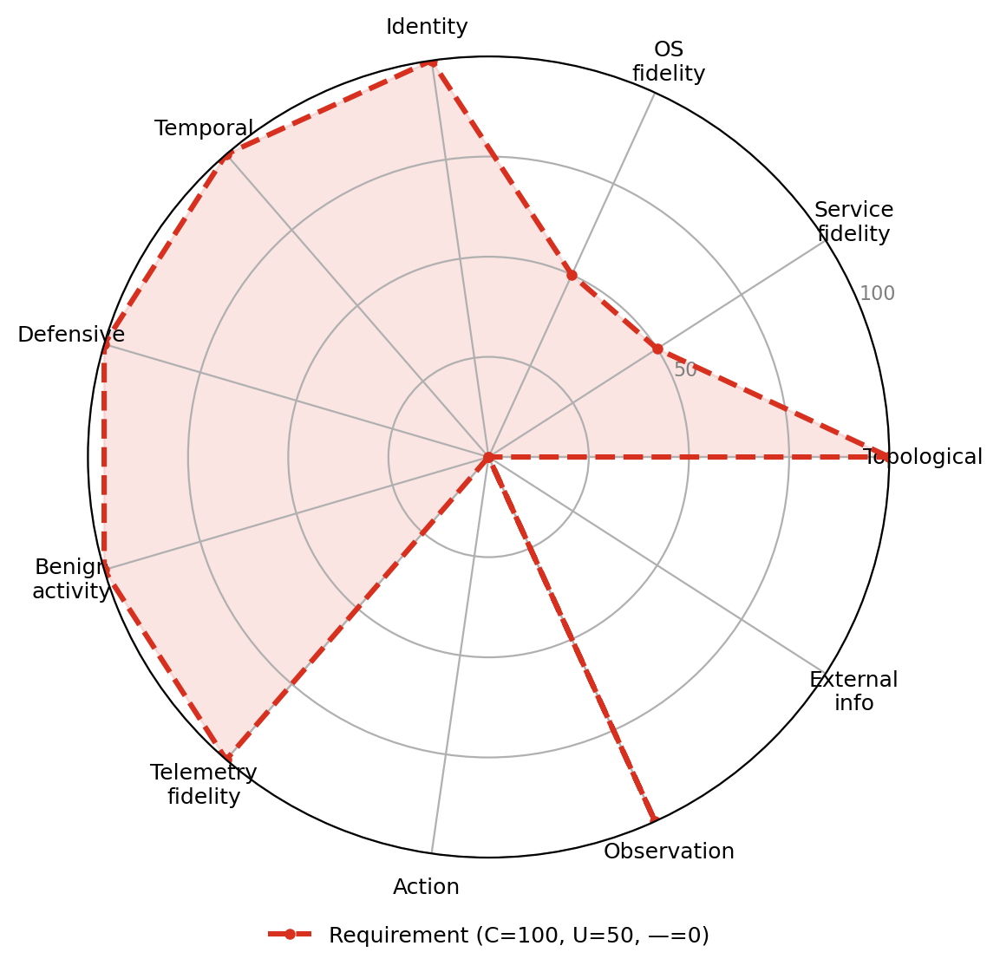
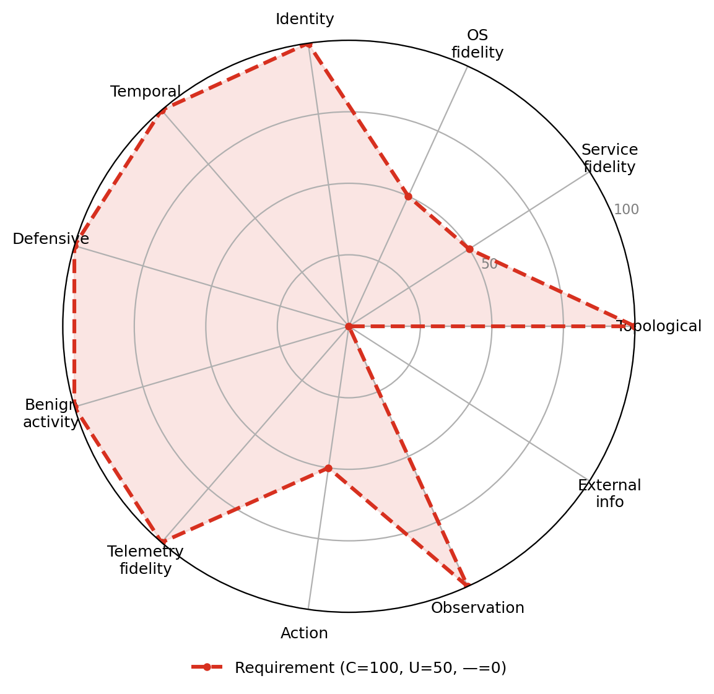

Use cases
Each use case has a realism-requirement profile over the 11 dimensions (critical / useful / not needed).
-

UC-A1 · Targeted data exfiltrationLocate sensitive data and move it out of the network covertly, against monitoring and baselines.
-

UC-A2 · Ransomware deploymentDeploy ransomware across hosts: propagation, encryption, and impact.
-

UC-A3 · Worm / self-propagationSelf-propagating spread across a network from an initial foothold.
-
 UC-A5 · Credential-based privilege escalation
UC-A5 · Credential-based privilege escalation
Escalate from a low-privilege account to higher privileges using credential and OS mechanics.
-

UC-A6 · Evasive red-team operationConduct a stealthy, operationally-secure campaign that blends into realistic activity.
-

UC-D1 · Alert triageTriage security alerts, separating malicious activity from benign noise.
-

UC-D2 · Incident responseRespond to and contain an active incident.
-
 UC-D3 · Threat hunting
UC-D3 · Threat hunting
Proactively hunt for threats across hosts and telemetry.
-

UC-S1 · Attacker-defender simulationSimulate interacting attacker and defender agents.
-
 UC-S2 · Security architecture evaluation
UC-S2 · Security architecture evaluation
Compare configurations and policies for time-to-compromise and weakest paths.